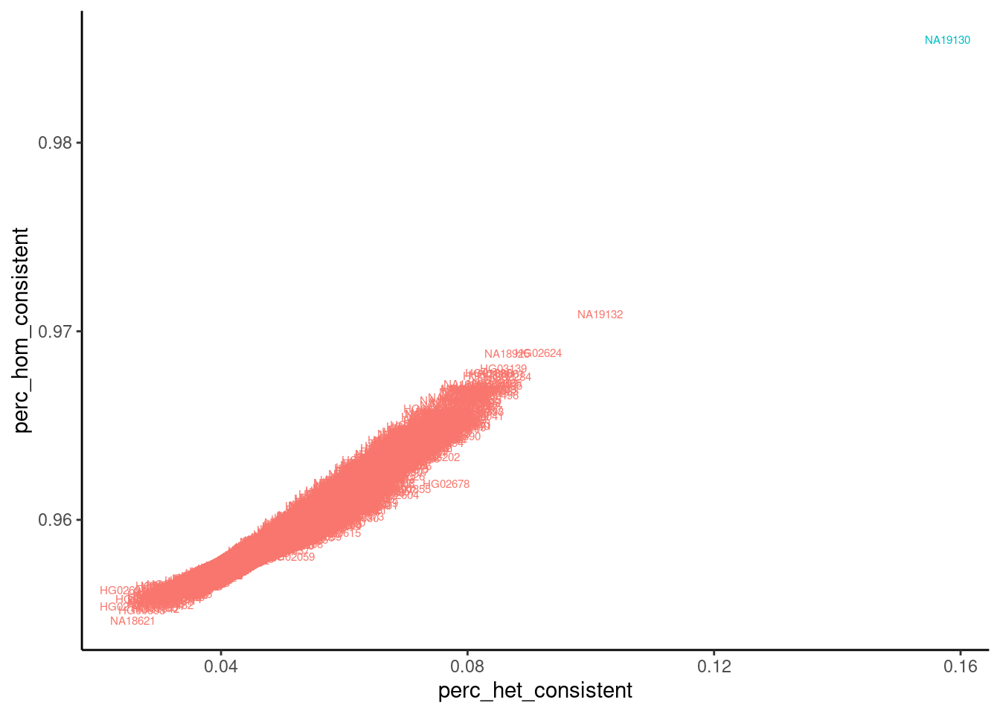
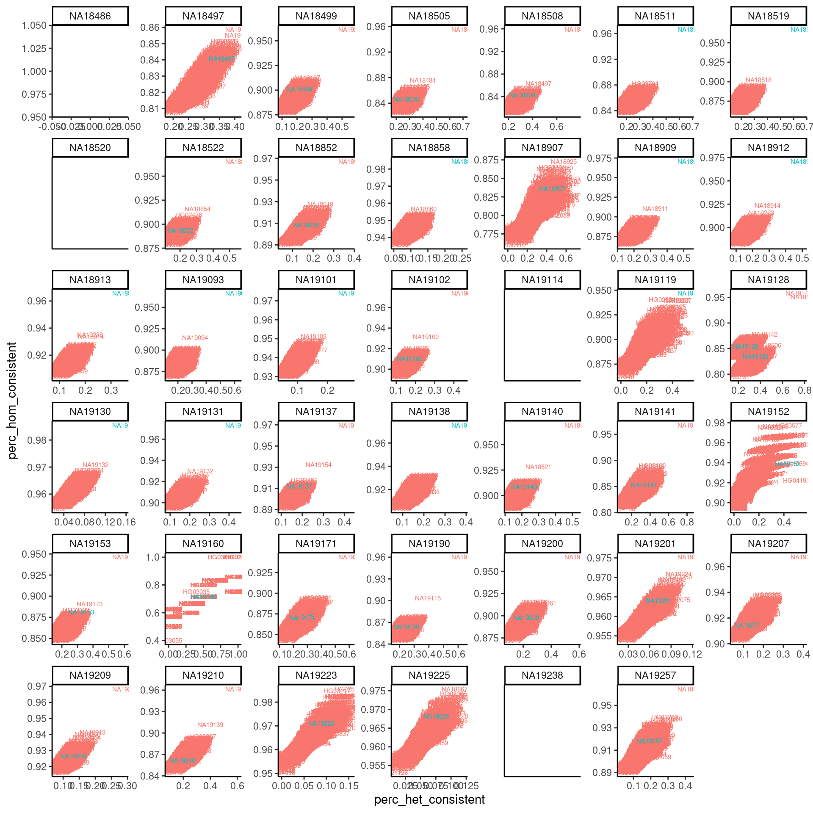
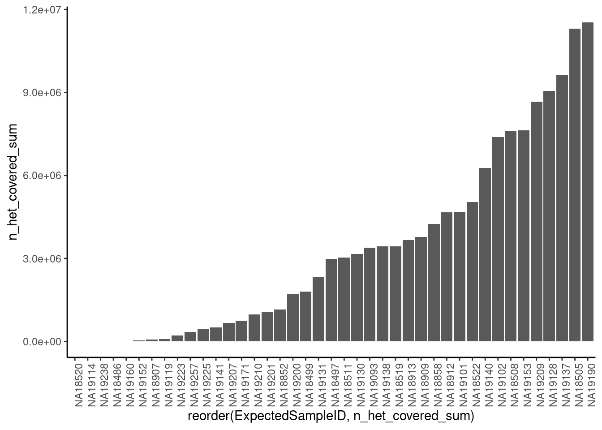

Last updated: 2021-06-04
Checks: 6 1
Knit directory: ChromatinSplicingQTLs/analysis/
This reproducible R Markdown analysis was created with workflowr (version 1.5.0). The Checks tab describes the reproducibility checks that were applied when the results were created. The Past versions tab lists the development history.
The R Markdown is untracked by Git. To know which version of the R Markdown file created these results, you’ll want to first commit it to the Git repo. If you’re still working on the analysis, you can ignore this warning. When you’re finished, you can run wflow_publish to commit the R Markdown file and build the HTML.
Great job! The global environment was empty. Objects defined in the global environment can affect the analysis in your R Markdown file in unknown ways. For reproduciblity it’s best to always run the code in an empty environment.
The command set.seed(20191126) was run prior to running the code in the R Markdown file. Setting a seed ensures that any results that rely on randomness, e.g. subsampling or permutations, are reproducible.
Great job! Recording the operating system, R version, and package versions is critical for reproducibility.
Nice! There were no cached chunks for this analysis, so you can be confident that you successfully produced the results during this run.
Great job! Using relative paths to the files within your workflowr project makes it easier to run your code on other machines.
Great! You are using Git for version control. Tracking code development and connecting the code version to the results is critical for reproducibility. The version displayed above was the version of the Git repository at the time these results were generated.
Note that you need to be careful to ensure that all relevant files for the analysis have been committed to Git prior to generating the results (you can use wflow_publish or wflow_git_commit). workflowr only checks the R Markdown file, but you know if there are other scripts or data files that it depends on. Below is the status of the Git repository when the results were generated:
Ignored files:
Ignored: .DS_Store
Ignored: .Rhistory
Ignored: .Rproj.user/
Ignored: ._.DS_Store
Ignored: analysis/.Rhistory
Ignored: code/.DS_Store
Ignored: code/.Rhistory
Ignored: code/._.DS_Store
Ignored: code/.snakemake/
Ignored: code/Alignments/
Ignored: code/ENCODE/
Ignored: code/ExpressionAnalysis/
Ignored: code/Fastq/
Ignored: code/FastqFastp/
Ignored: code/Genotypes/
Ignored: code/Log.out
Ignored: code/Log.progress.out
Ignored: code/Multiqc/
Ignored: code/MyOutput.sam
Ignored: code/PeakCalling/
Ignored: code/Phenotypes/
Ignored: code/PlotGruberQTLs/
Ignored: code/ProCapAnalysis/
Ignored: code/QC/
Ignored: code/QTLs/
Ignored: code/ReferenceGenome/
Ignored: code/Session.vim
Ignored: code/SplicingAnalysis/
Ignored: code/TODO
Ignored: code/_STARtmp/
Ignored: code/bigwigs/
Ignored: code/bigwigs_FromNonWASPFilteredReads/
Ignored: code/config/.DS_Store
Ignored: code/config/._.DS_Store
Ignored: code/config/ExternalFastqDataAccessions/
Ignored: code/featureCounts/
Ignored: code/logs/
Ignored: code/out.log
Ignored: code/output/
Ignored: code/rules/OldRules/
Ignored: code/scratch/
Ignored: code/scripts/GTFtools_0.8.0/
Ignored: code/scripts/liftOverBedpe/liftOverBedpe.py
Ignored: code/snakemake.log
Ignored: code/snakemake.sbatch.log
Ignored: data/._PRJEB1350_RunTable.Ding_etal_CTCF.txt
Untracked files:
Untracked: analysis/20210604_CheckSampleGenotypes.Rmd
Untracked: code/envs/deeptools.yml
Untracked: code/rules/ProSeqAnalysis.smk
Untracked: code/scripts/PlotPCA_FromPhenotypeTable.R
Untracked: code/scripts/Plot_mbv.R
Untracked: code/scripts/PreparePhenotypeTableFromFeatureCounts_SubsetGeneList.R
Untracked: code/scripts/PreparePhenotypeTable_ProCap.R
Untracked: code/snakemake_profiles/slurm/__pycache__/
Untracked: data/20210604_chRNA_SampleIDs_FromBamToFix.txt
Untracked: output/QC/
Unstaged changes:
Modified: code/Snakefile
Modified: code/config/samples.tsv
Modified: code/rules/ExpressionAnalysis.smk
Modified: code/rules/MakeBigwigs.smk
Modified: code/rules/QC.smk
Modified: code/rules/QTLTools.smk
Modified: code/rules/common.py
Modified: code/scripts/CalculateNormFactorsForBigwig.R
Modified: code/scripts/PreparePhenotypeTablesFromFeatureCounts_ChromatinProfilingPeaks.R
Staged changes:
Modified: .gitmodules
New: code/scripts/qtltools
Note that any generated files, e.g. HTML, png, CSS, etc., are not included in this status report because it is ok for generated content to have uncommitted changes.
There are no past versions. Publish this analysis with wflow_publish() to start tracking its development.
From our first batch of chRNA-seq samples (~40 YRI lines), I found no eQTLs which was a bit concerning. I want to verify that there were no sample swaps. Therefore, I ran QTLtools mbv command on each bam to see which 1000 genome’s sample matches best, and saved the results to a file included in this repo. Here I will analyze those results, and figure out if there were any sample swaps.
first load libraries and data
library(tidyverse)── Attaching packages ──────────────────────────────── tidyverse 1.2.1 ──✓ ggplot2 3.2.1 ✓ purrr 0.3.3
✓ tibble 3.0.4 ✓ dplyr 1.0.2
✓ tidyr 1.1.2 ✓ stringr 1.4.0
✓ readr 1.4.0 ✓ forcats 0.5.0── Conflicts ─────────────────────────────────── tidyverse_conflicts() ──
x dplyr::filter() masks stats::filter()
x dplyr::lag() masks stats::lag()library(knitr)
dat <- read_tsv("../output/QC/20210604_mbv.summary.txt.gz")
── Column specification ─────────────────────────────────────────────────
cols(
SampleID = col_character(),
n_het_covered = col_double(),
perc_het_consistent = col_double(),
perc_hom_consistent = col_double(),
fn = col_character()
)head(dat) %>% kable()| SampleID | n_het_covered | perc_het_consistent | perc_hom_consistent | fn |
|---|---|---|---|---|
| HG00096 | 0 | NaN | 1 | QC/mbv/data/chRNA.Expression.Splicing/NA18486.1.txt |
| HG00097 | 0 | NaN | 1 | QC/mbv/data/chRNA.Expression.Splicing/NA18486.1.txt |
| HG00099 | 0 | NaN | 1 | QC/mbv/data/chRNA.Expression.Splicing/NA18486.1.txt |
| HG00100 | 1 | 0 | NaN | QC/mbv/data/chRNA.Expression.Splicing/NA18486.1.txt |
| HG00101 | 0 | NaN | 1 | QC/mbv/data/chRNA.Expression.Splicing/NA18486.1.txt |
| HG00102 | 0 | NaN | 1 | QC/mbv/data/chRNA.Expression.Splicing/NA18486.1.txt |
Now tidy the data a bit plot the results for one example
# Extract sample name from filename (fn)
dat <- dat %>%
mutate(ExpectedSampleID = str_replace(fn, ".+Splicing\\/(.+?)\\..+$", "\\1"))
dat %>%
filter(ExpectedSampleID=="NA19130") %>%
mutate(IsExpectedSample= (ExpectedSampleID == SampleID)) %>%
arrange(IsExpectedSample) %>%
ggplot(aes(x=perc_het_consistent, y=perc_hom_consistent, color=IsExpectedSample, label=SampleID)) +
geom_text(size=2) +
theme_classic() +
theme(legend.position = "none")
Ok, at least for that one sample, the data looks great and as expected. The expected sample (line NA19130) is a clear outlier with a higher fraction of concordant reads matching the expected genotypes for line NA19130 at both homozygous and heterozygous sites. Let’s make this plot for all sequenced samples…
dat %>%
mutate(IsExpectedSample= (ExpectedSampleID == SampleID)) %>%
arrange(IsExpectedSample) %>%
ggplot(aes(x=perc_het_consistent, y=perc_hom_consistent, color=IsExpectedSample, label=SampleID)) +
geom_text(size=2) +
facet_wrap(~ExpectedSampleID, scale="free") +
theme_classic() +
theme(legend.position = "none")
Ok, clearly there a lot of sample swaps where the best match is clear and is not the expected sample. Though there a lot of ‘good’ samples that look like the first example I plotted, and there are also some samples that just don’t have enough data to make a reliable plot. I am noting that all of the samples where there is a clear match that is not the expected sample, match to a different sample in this batch of samples we made libraries for. This is most consistent with sample swapping during our cell prep or library prep, rather than the cell lines that we thawed being some other cell line.
Let’s write some quick rules to output the best match for each line, so we can systematically correct the sample swapping… For example, something along the lines of this algorithm:
First, let’s look at the plot above, and compare it to the sum of n_het_covered field for each sample as a proxy for good the data is and whether we should exclude certain samples (Point #1)
dat.x <- dat %>%
group_by(ExpectedSampleID) %>%
summarise(n_het_covered_sum = sum(n_het_covered, na.rm=T)) %>%
arrange(n_het_covered_sum)`summarise()` ungrouping output (override with `.groups` argument)ggplot(dat.x, aes(x=reorder(ExpectedSampleID, n_het_covered_sum), y=n_het_covered_sum)) +
geom_col() +
theme_classic() +
theme(axis.text.x = element_text(angle = 90))
head(dat.x, 10)# A tibble: 10 x 2
ExpectedSampleID n_het_covered_sum
<chr> <dbl>
1 NA18520 0
2 NA19114 0
3 NA19238 0
4 NA18486 983
5 NA19160 3159
6 NA19152 45651
7 NA18907 67066
8 NA19119 80334
9 NA19223 216688
10 NA19257 345384Ok, let’s consider all those samples with less n_het_covered_sum than sample 19119 as samples to drop and automatically call unknown.
SamplesToDrop <- dat.x %>%
filter(n_het_covered_sum < 80334) %>%
pull(ExpectedSampleID)
SamplesToDrop[1] "NA18520" "NA19114" "NA19238" "NA18486" "NA19160" "NA19152" "NA18907"Now let’s find the best match for the rest…
BestMatches <- dat %>%
filter(!ExpectedSampleID %in% SamplesToDrop) %>%
group_by(fn) %>%
mutate( BestHit_het = (perc_het_consistent == max(perc_het_consistent, na.rm = T)),
BestHit_hom = (perc_hom_consistent == max(perc_hom_consistent, na.rm=T))) %>%
ungroup() %>%
filter(BestHit_hom & BestHit_het) %>%
right_join(
dat %>% select(ExpectedSampleID) %>% unique(),
by = "ExpectedSampleID"
) %>%
select(ExpectedSampleID, BestMatch = SampleID, fn) %>%
mutate(IsSwapped = !ExpectedSampleID == BestMatch)
kable(BestMatches)| ExpectedSampleID | BestMatch | fn | IsSwapped |
|---|---|---|---|
| NA18497 | NA19130 | QC/mbv/data/chRNA.Expression.Splicing/NA18497.1.txt | TRUE |
| NA18499 | NA19209 | QC/mbv/data/chRNA.Expression.Splicing/NA18499.1.txt | TRUE |
| NA18505 | NA18486 | QC/mbv/data/chRNA.Expression.Splicing/NA18505.1.txt | TRUE |
| NA18508 | NA18499 | QC/mbv/data/chRNA.Expression.Splicing/NA18508.1.txt | TRUE |
| NA18511 | NA18511 | QC/mbv/data/chRNA.Expression.Splicing/NA18511.1.txt | FALSE |
| NA18519 | NA18519 | QC/mbv/data/chRNA.Expression.Splicing/NA18519.1.txt | FALSE |
| NA18522 | NA18852 | QC/mbv/data/chRNA.Expression.Splicing/NA18522.1.txt | TRUE |
| NA18852 | NA18520 | QC/mbv/data/chRNA.Expression.Splicing/NA18852.1.txt | TRUE |
| NA18858 | NA18858 | QC/mbv/data/chRNA.Expression.Splicing/NA18858.1.txt | FALSE |
| NA18909 | NA18909 | QC/mbv/data/chRNA.Expression.Splicing/NA18909.1.txt | FALSE |
| NA18912 | NA18912 | QC/mbv/data/chRNA.Expression.Splicing/NA18912.1.txt | FALSE |
| NA18913 | NA18913 | QC/mbv/data/chRNA.Expression.Splicing/NA18913.1.txt | FALSE |
| NA19093 | NA19093 | QC/mbv/data/chRNA.Expression.Splicing/NA19093.1.txt | FALSE |
| NA19101 | NA19101 | QC/mbv/data/chRNA.Expression.Splicing/NA19101.1.txt | FALSE |
| NA19102 | NA19099 | QC/mbv/data/chRNA.Expression.Splicing/NA19102.1.txt | TRUE |
| NA19119 | NA19119 | QC/mbv/data/chRNA.Expression.Splicing/NA19119.1.txt | FALSE |
| NA19128 | NA19140 | QC/mbv/data/chRNA.Expression.Splicing/NA19128.1.txt | TRUE |
| NA19128 | NA18508 | QC/mbv/data/chRNA.Expression.Splicing/NA19128.2.txt | TRUE |
| NA19130 | NA19130 | QC/mbv/data/chRNA.Expression.Splicing/NA19130.1.txt | FALSE |
| NA19131 | NA19131 | QC/mbv/data/chRNA.Expression.Splicing/NA19131.1.txt | FALSE |
| NA19137 | NA19152 | QC/mbv/data/chRNA.Expression.Splicing/NA19137.1.txt | TRUE |
| NA19138 | NA19138 | QC/mbv/data/chRNA.Expression.Splicing/NA19138.1.txt | FALSE |
| NA19140 | NA18522 | QC/mbv/data/chRNA.Expression.Splicing/NA19140.1.txt | TRUE |
| NA19141 | NA19190 | QC/mbv/data/chRNA.Expression.Splicing/NA19141.1.txt | TRUE |
| NA19153 | NA19171 | QC/mbv/data/chRNA.Expression.Splicing/NA19153.1.txt | TRUE |
| NA19171 | NA19200 | QC/mbv/data/chRNA.Expression.Splicing/NA19171.1.txt | TRUE |
| NA19190 | NA19114 | QC/mbv/data/chRNA.Expression.Splicing/NA19190.1.txt | TRUE |
| NA19200 | NA19160 | QC/mbv/data/chRNA.Expression.Splicing/NA19200.1.txt | TRUE |
| NA19201 | NA19225 | QC/mbv/data/chRNA.Expression.Splicing/NA19201.1.txt | TRUE |
| NA19207 | NA19257 | QC/mbv/data/chRNA.Expression.Splicing/NA19207.1.txt | TRUE |
| NA19209 | NA19238 | QC/mbv/data/chRNA.Expression.Splicing/NA19209.1.txt | TRUE |
| NA19210 | NA19137 | QC/mbv/data/chRNA.Expression.Splicing/NA19210.1.txt | TRUE |
| NA19257 | NA18505 | QC/mbv/data/chRNA.Expression.Splicing/NA19257.1.txt | TRUE |
| NA18486 | NA | NA | NA |
| NA18520 | NA | NA | NA |
| NA18907 | NA | NA | NA |
| NA19114 | NA | NA | NA |
| NA19152 | NA | NA | NA |
| NA19160 | NA | NA | NA |
| NA19223 | NA | NA | NA |
| NA19225 | NA | NA | NA |
| NA19238 | NA | NA | NA |
Also, write out these results to a file… It might be handy if I want to fix the sample labels in my snakemake with a script. These exact results will be hard to replicate once I fix the sample labels in my snakemake, so I’ll save them to the data folder where I tend to not write to files to be overwritten.
write_tsv(BestMatches, "../data/20210604_chRNA_SampleIDs_FromBamToFix.txt")
sessionInfo()R version 3.4.3 (2017-11-30)
Platform: x86_64-pc-linux-gnu (64-bit)
Running under: Scientific Linux 7.4 (Nitrogen)
Matrix products: default
BLAS/LAPACK: /software/openblas-0.2.19-el7-x86_64/lib/libopenblas_haswellp-r0.2.19.so
locale:
[1] LC_CTYPE=en_US.UTF-8 LC_NUMERIC=C
[3] LC_TIME=en_US.UTF-8 LC_COLLATE=en_US.UTF-8
[5] LC_MONETARY=en_US.UTF-8 LC_MESSAGES=en_US.UTF-8
[7] LC_PAPER=en_US.UTF-8 LC_NAME=C
[9] LC_ADDRESS=C LC_TELEPHONE=C
[11] LC_MEASUREMENT=en_US.UTF-8 LC_IDENTIFICATION=C
attached base packages:
[1] stats graphics grDevices utils datasets methods base
other attached packages:
[1] knitr_1.26 forcats_0.5.0 stringr_1.4.0 dplyr_1.0.2
[5] purrr_0.3.3 readr_1.4.0 tidyr_1.1.2 tibble_3.0.4
[9] ggplot2_3.2.1 tidyverse_1.2.1
loaded via a namespace (and not attached):
[1] tidyselect_1.1.0 xfun_0.20 haven_2.3.1 colorspace_2.0-0
[5] vctrs_0.3.6 generics_0.1.0 htmltools_0.4.0 yaml_2.2.0
[9] utf8_1.1.4 rlang_0.4.9 later_1.0.0 pillar_1.4.7
[13] glue_1.4.2 withr_2.1.2 modelr_0.1.8 readxl_1.3.1
[17] lifecycle_0.2.0 munsell_0.5.0 gtable_0.3.0 workflowr_1.5.0
[21] cellranger_1.1.0 rvest_0.3.6 evaluate_0.14 labeling_0.3
[25] httpuv_1.5.2 fansi_0.4.0 highr_0.8 broom_0.7.3
[29] Rcpp_1.0.3 promises_1.1.0 scales_1.1.0 backports_1.1.5
[33] jsonlite_1.6 farver_2.0.1 fs_1.3.1 hms_0.5.3
[37] digest_0.6.27 stringi_1.4.3 grid_3.4.3 rprojroot_1.3-2
[41] cli_2.0.0 tools_3.4.3 magrittr_1.5 lazyeval_0.2.2
[45] crayon_1.3.4 pkgconfig_2.0.3 ellipsis_0.3.0 xml2_1.2.0
[49] lubridate_1.7.9.2 assertthat_0.2.1 rmarkdown_2.6 httr_1.4.2
[53] rstudioapi_0.10 R6_2.4.1 git2r_0.26.1 compiler_3.4.3